Senior creative strategist · 5+ years · Paid media
I read what customers say, then turn it into ads worth testing.
Reviews, ad comments and search terms tell you why people buy and what stops them. I turn that into angles, hooks, copy and statics. I also run the media, so I find out fast which ideas earn more budget.
See the workBrands I’ve worked with
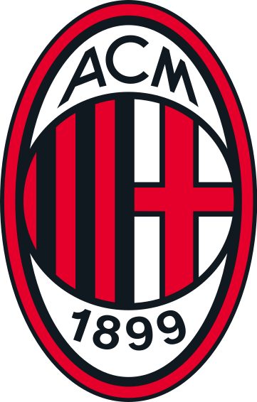
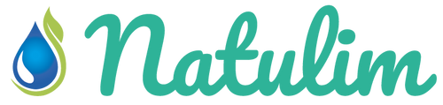
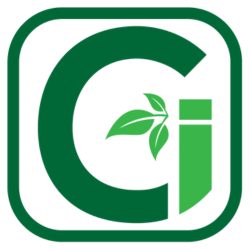
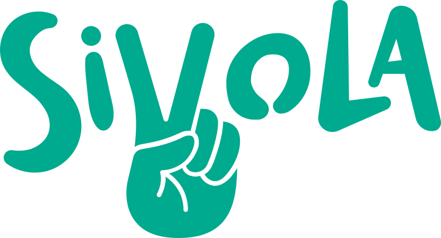
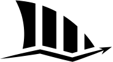
Starting Finance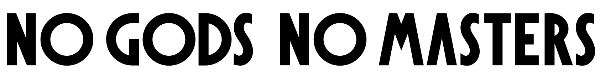
Case 01 / Natulim
Italy · Meta · Creators
Twelve ads.
Twelve ways in.
Natulim Italy. A collection of concepts, tests and lessons from the creative system I built as Italy Country Manager. Some won, some didn’t. Each one tells us something about what to make next.
€11.29
CPA on “What are dryer balls?”
€643.69 spend · 28 Oct to 10 Nov 2026 · two weeks of launch data
THE CREATIVE FILES / 01–12
What we made.
What we learned.
Different products, angles and formats. The result matters, but so does the thinking behind it.
A new hook for an Italian customer.
A Spanish animation didn’t translate. I rebuilt the opening around a mother’s concern about her child’s plate.
€14.79CPA · €872 spend
Rebuilt hook · Winner
Rebuilt hook · Winner
First explain what the product does.
An unaware audience, an unfamiliar product and real footage. No creator needed.
€11.29CPA · €643.69 spend
Two weeks of launch data
Two weeks of launch data
Show the problem in frame one.
Adapted a Spanish video for Italy. A strong first week didn’t hold over the full period.
€38.63Full-period CPA
32 purchases · A lesson
32 purchases · A lesson
Bring back an angle customers remembered.
Our survey pointed to a health angle that had worked in Italy before. It didn’t beat the account average this time.
€36.03CPA · 13 purchases
Above account average
Above account average
The best hook didn’t sell best.
One video body, multiple openings. Hook 3 drew attention but cost more per purchase; Hook 1 sold near the account average.
€26.59CPA · Hook 1
Hook test · Mixed result
Hook test · Mixed result
Turn the gifts into the story.
Our best statics featured the free gifts. The video explained what they were for, instead of opening with a sales pitch.
€13.76CPA · 6 purchases
Promising · Small sample
Promising · Small sample
Keep the picture. Rebuild the voice.
A Spanish comparison adapted for Italy. Performance was promising; further use was put on hold pending footage verification.
€26.68CPA · 7 purchases
On hold · Footage review
On hold · Footage review
A Polish winner, tested in Italy.
We replicated a proven concept without a talking creator. It spent, but didn’t match the account average.
€33.91CPA · 29 purchases
31% above average
31% above average
Two hooks, same body.
A competitor-inspired concept tested with two openings. One looked promising; the other didn’t convert enough.
€23.20CPA · 4 purchases
Hook A · Small sample
Hook A · Small sample
Lead with the smell of a closed room.
A problem-first video for cold audiences, inspired by a fresh competitor reference. Early promise didn’t hold in a later campaign.
€41.89Overall CPA · 6 purchases
Not yet proven
Not yet proven
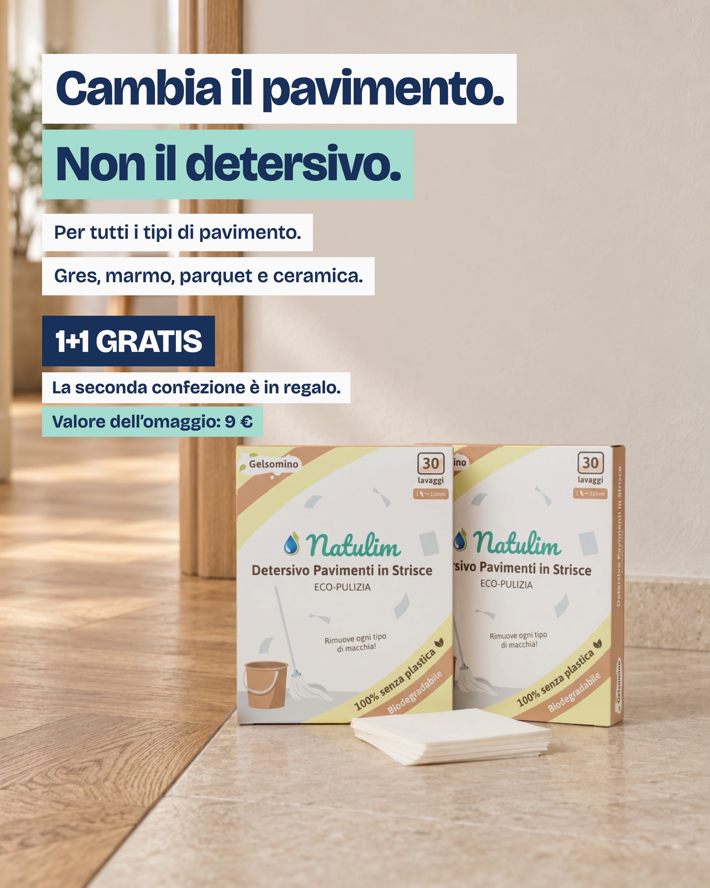
One offer. Five statics.
A simple 1+1 offer, first on the product page, then in a set of ads showing both boxes.
2.56×ROAS · 29 purchases
Cold traffic · Winner
Cold traffic · Winner
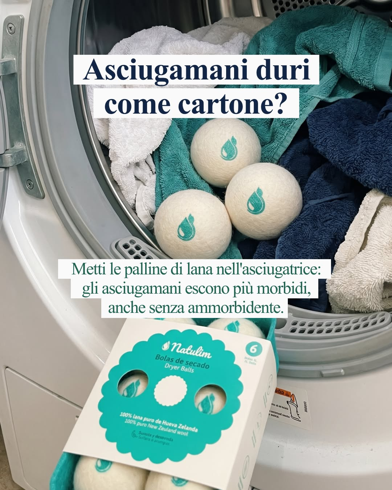
Cardboard towels, softer solution.
A hook from a Polish winner, paired with the benefit customers mentioned most in reviews.
€18.81CPA · 18 purchases
First two weeks · Promising
First two weeks · Promising
Meta results: 15 Sep–10 Nov 2026 unless another period is stated. Account average CPA: €25.90. Meta purchases include existing customers.
More ads · CGI Green
Some of the ads I’ve made.
CGI Green, a US sea moss brand. Each ad starts from one angle: a reason to buy or a doubt to answer. I wrote the copy and made the statics with AI image tools and the real product photos.
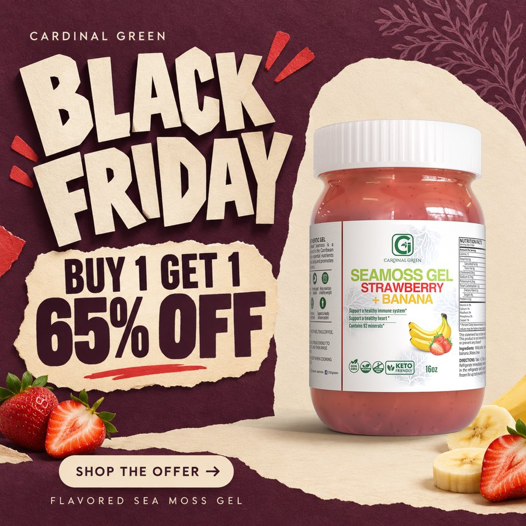
Offer · Black Friday
“Black Friday. Buy 1, get 1 65% off.”
The offer does the talking, in big type on torn paper. The fruit sits next to the jar, so you know the flavour before you read a word.
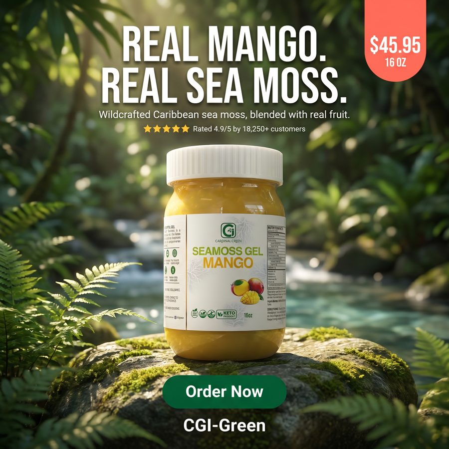
Angle · Taste
“Real mango. Real sea moss.”
For people worried sea moss tastes like the sea. It leads with the fruit.
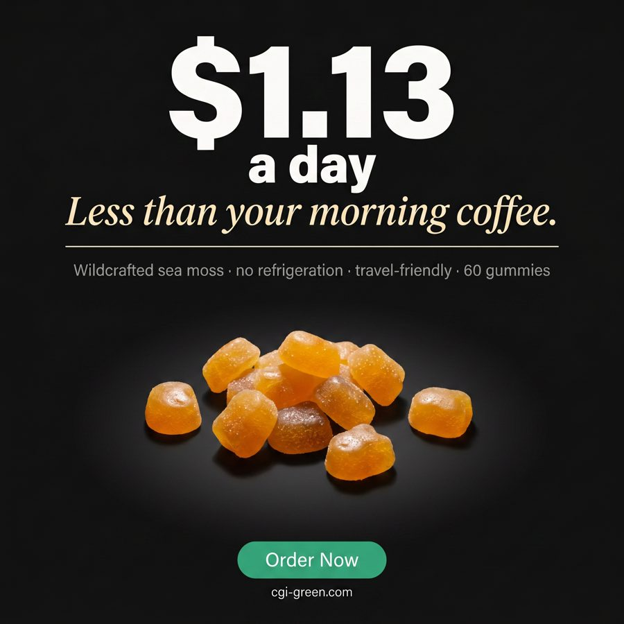
Angle · Price
“$1.13 a day. Less than your morning coffee.”
Turns a $33.95 bottle into a daily cost people already pay without thinking.
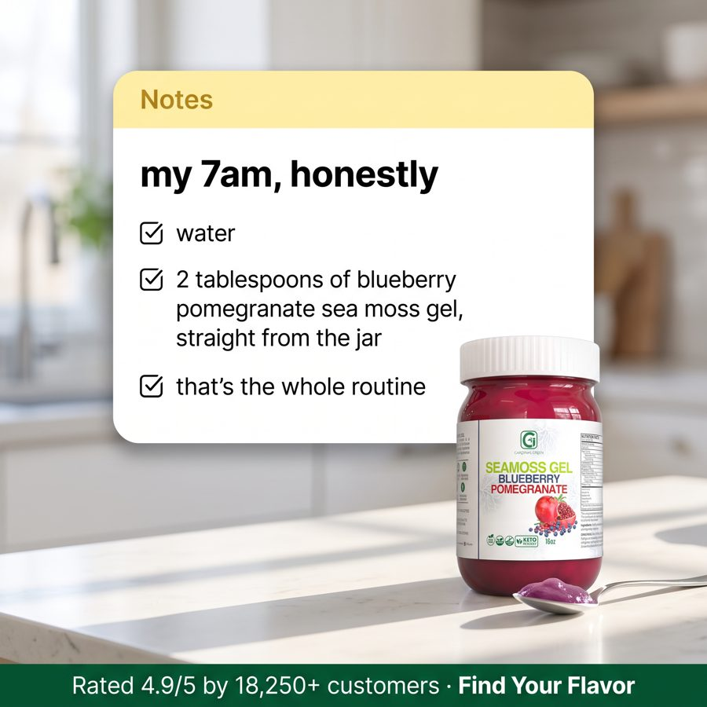
Format · Native notes app
“my 7am, honestly”
Looks like a screenshot, not an ad. Sells the routine: water, 2 tablespoons, done.
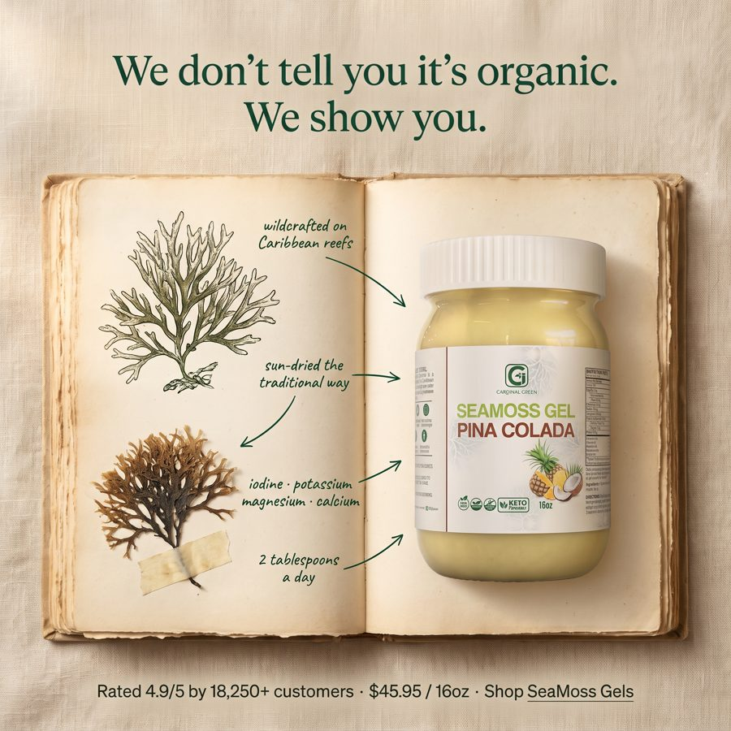
Angle · Proof of sourcing
“We don’t tell you it’s organic. We show you.”
For the careful buyer who reads before buying. Uses the brand’s own line.
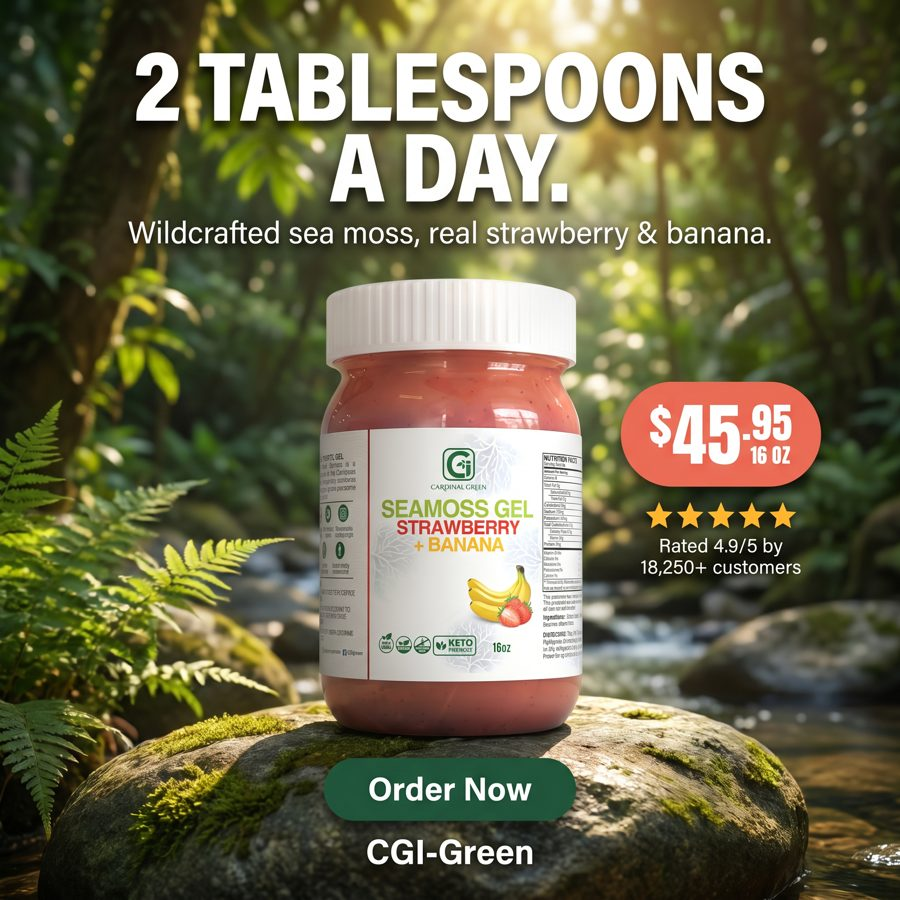
Angle · How to use it
“2 tablespoons a day.”
Answers “how do I take it?” right in the headline.
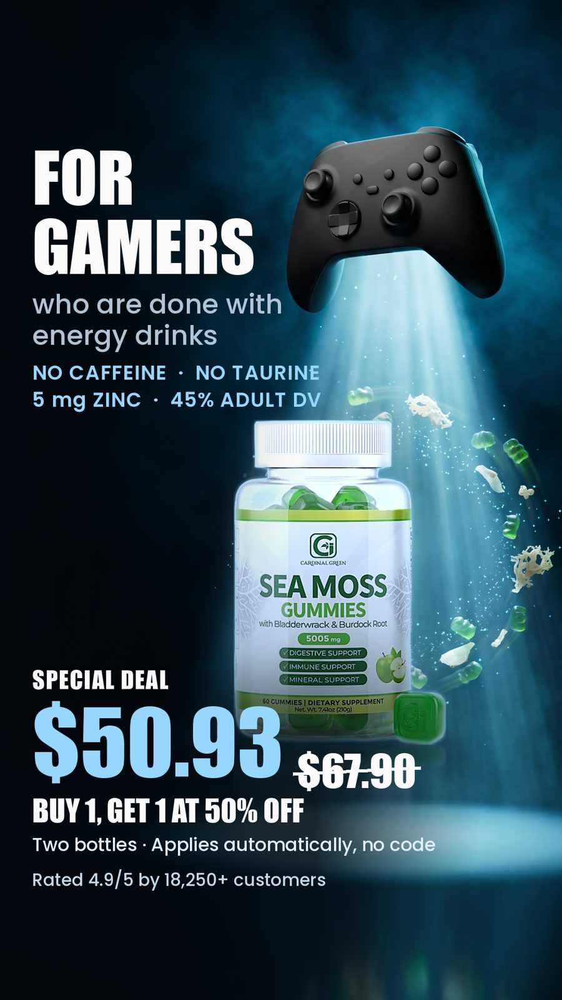
Audience · Gamers
“For gamers who are done with energy drinks.”
Same product, new audience: no caffeine, no taurine, a different reason to try it.
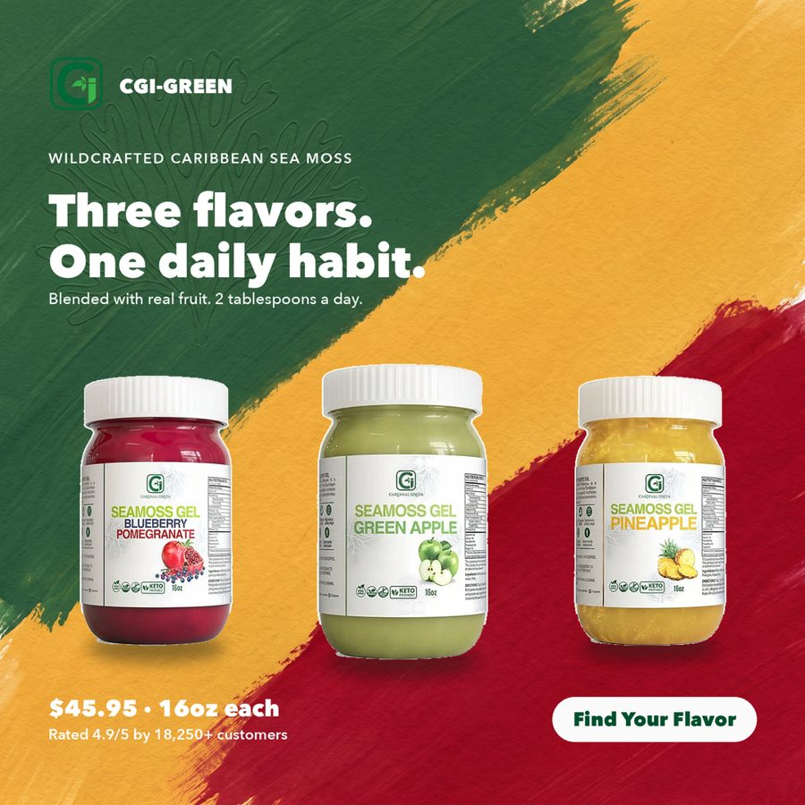
Angle · Flavour choice
“Three flavors. One daily habit.”
Gives people a flavour to pick instead of a product to figure out.
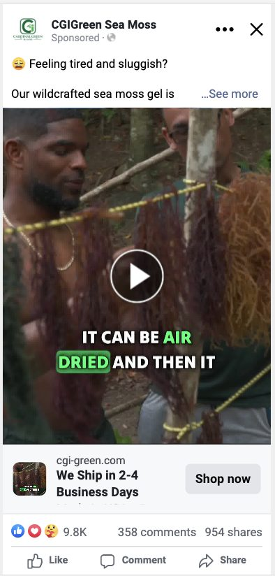
Video · Meta feed
9.8K reactions, 954 shares
A harvest video on how the sea moss is air dried, with 358 comments.
Case 02 / AC Milan
Official online store · Kit launches
A testing system for every kit launch.
For the official online store, I built a creative roadmap and launch matrix across kits, languages, markets and formats.
6
Creative territories
From product detail to fan ritual and heritage
What I built
Six creative territories
Product detail, full outfit, fan ritual, heritage, launch urgency and creator-native content.
A kit-launch matrix
Three kits across two languages and three placements, with player-led and product-led versions.
Names that carry the test
Each ad name holds market, format, angle, player, kit and landing page, so results group cleanly.
Case 03 / CGI Green
US DTC · Meta · Google
Nine reasons people don’t buy, nine angles to answer them.
I went through reviews, ad comments and search terms and found nine objections, from the taste to whether the gel arrives fresh. Each became an angle with its own hooks, and each ad name carries audience, objection and format, so the weekly review shows which doubts the ads actually answer.
6.6×
Revenue per visitor on angle-led pages
$5.52 vs $0.83 on the default collection page
Client perspective
Anton Cardinal on working with me.
“What I appreciate most about Andrea is his flexibility, his availability, his willingness to work alongside everyone and to come up with great ideas.”
Available for remote creative strategy roles